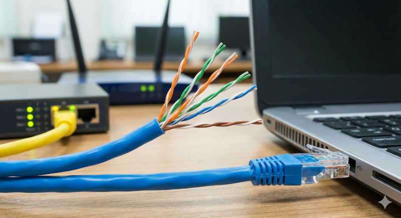
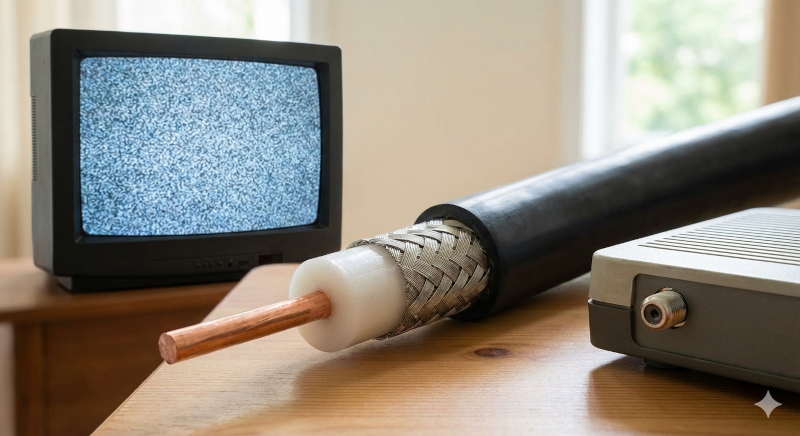
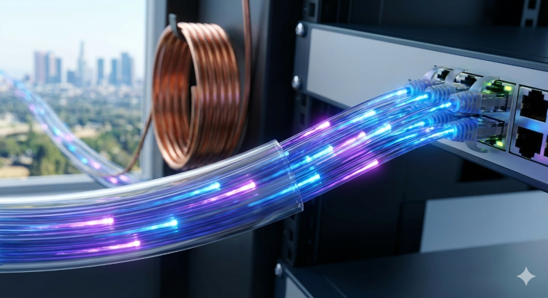
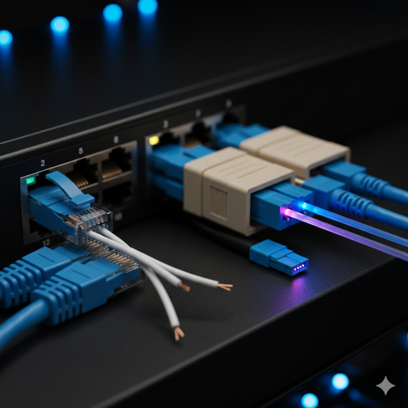
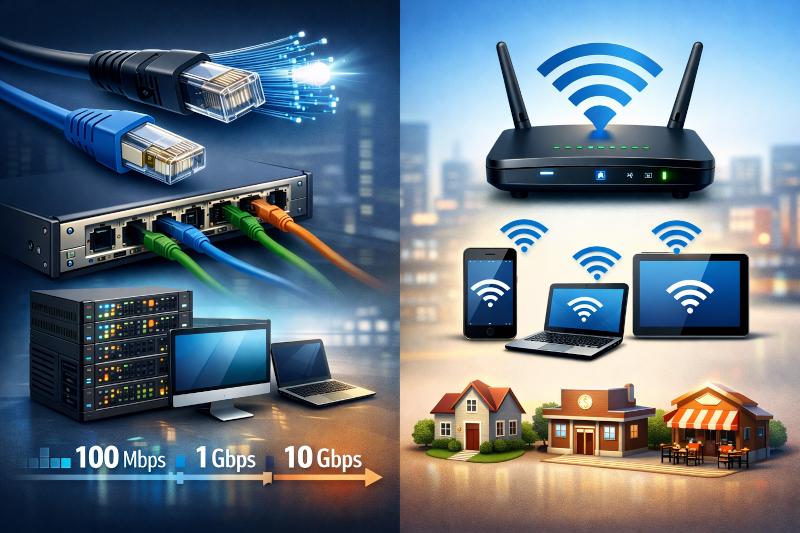

Meios de Transmissão são os caminhos físicos ou não físicos por onde os dados (informações)
trafegam em uma rede de computadores.
Eles funcionam como “estradas” que levam os dados de um dispositivo para outro, como de um
computador para um roteador ou para a internet.
Em uma rede, os dados podem trafegar de duas formas:
🔹 Por cabos (meios guiados)
🔹 Pelo ar (meios não guiados)
Sem um meio de transmissão, os dispositivos até podem existir, mas não conseguem se comunicar.

Cabo de Par Trançado
O cabo de par trançado é o meio de transmissão mais utilizado em redes de computadores,
principalmente em redes LAN, baixo custo, é fácil de instalar, oferece boa velocidade de transmissão. 🔌 Conector RJ-45
Esse cabo utiliza o conector RJ-45, que é o plug padrão das redes Ethernet.
É ele que conecta o cabo ao computador, switch, roteador ou modem. 🧵 Como funciona?
O cabo é formado por pares de fios trançados entre si.
Esse trançamento reduz interferências elétricas e perda de sinal, garantindo uma comunicação
mais estável. 📊 Categorias do Cabo de Par Trançado
As categorias indicam velocidade e qualidade do cabo: ✔ Cat5e
Velocidade de até 1 Gbps
Muito comum em redes domésticas e escolares ✔ Cat6
Velocidade de até 10 Gbps (em distâncias menores)
Menos interferência que o Cat5e ✔ Cat6a
Velocidade de até 10 Gbps em distâncias maiores
Melhor proteção contra interferências
Usado em redes profissionais e data centers

Cabo Coaxial
O cabo coaxial é um tipo de meio de transmissão mais antigo, muito utilizado no passado para TV
a cabo e internet banda larga antiga.
🧵 Como ele é formado?
O cabo coaxial possui:
Um fio central de cobre (por onde o sinal passa)
Uma camada isolante
Uma malha metálica que protege contra interferências
Uma capa externa de proteção
Essa estrutura ajuda a reduzir ruídos e interferências.
📺 Onde foi usado?
✔ TV a cabo
✔ Internet antiga (como redes de operadoras e padrões antigos de Ethernet, ex: 10Base2 e
10Base5)
❌ Por que é pouco usado hoje em redes modernas?
Menor flexibilidade de instalação
Velocidade e escalabilidade limitadas em redes locais
Foi substituído pelo cabo de par trançado e pela fibra óptica, que oferecem mais desempenho

Fibra Óptica
A fibra óptica é o meio de transmissão mais moderno e eficiente usado atualmente em redes de
computadores e telecomunicações.
⚡ Altíssima velocidade
A transmissão dos dados é feita por pulsos de luz, não por eletricidade.
Isso permite velocidades muito altas, chegando a dezenas ou centenas de Gbps, ideal para
internet rápida e redes de grande porte.
📏 Longas distâncias
A fibra consegue transmitir dados por quilômetros sem perda significativa de sinal, diferente
dos cabos metálicos, que sofrem atenuação em distâncias menores.
🛡 Imune a interferência
Por usar luz, a fibra óptica não sofre interferência eletromagnética, não é afetada por ruídos
elétricos, motores, rádios ou descargas elétricas, garantindo mais estabilidade e segurança.
👉 Onde é usada?
✔ Internet de alta velocidade (FTTH)
✔ Backbones de operadoras
✔ Data centers e redes corporativas

Conectores
Os conectores são os componentes responsáveis por ligar os cabos aos equipamentos de rede,
permitindo a transmissão dos dados. 🔌 RJ-45 → Redes Ethernet
O RJ-45 é o conector padrão das redes cabeadas Ethernet.
Ele é usado com cabos de par trançado (Cat5e, Cat6, Cat6a).
✔ Conecta computadores, switches, roteadores e modems
✔ Muito comum em redes domésticas, escolares e empresariais
✔ Fácil de instalar e baixo custo 🔦 SC / LC → Fibra Óptica
Os conectores SC e LC são utilizados em cabos de fibra óptica, responsáveis por alinhar
corretamente a fibra para a passagem da luz.
✔ SC (Subscriber Connector)
Maior e mais robusto
Muito usado em provedores e data centers
✔ LC (Lucent Connector)
Menor e mais moderno
Ideal para equipamentos de alta densidade

Padrões de Rede
Os padrões de rede definem regras e especificações técnicas para que diferentes equipamentos
consigam se comunicar corretamente em uma rede, mesmo sendo de fabricantes diferentes.
🔌 IEEE 802.3 → Ethernet
O IEEE 802.3 é o padrão que define as redes Ethernet cabeadas.
✔ Utiliza cabos (par trançado ou fibra óptica)
✔ Oferece alta velocidade e estabilidade
✔ Muito usado em redes locais (LAN), empresas e data centers
Exemplos de velocidades:
100 Mbps
1 Gbps
10 Gbps ou mais
📡 IEEE 802.11 → Wi-Fi
O IEEE 802.11 é o padrão das redes sem fio (Wi-Fi).
✔ Comunicação por ondas de rádio
✔ Permite mobilidade (notebooks, celulares, tablets)
✔ Muito usado em casas, escolas e locais públicos
Exemplos de versões:
802.11n
802.11ac
802.11ax (Wi-Fi 6)